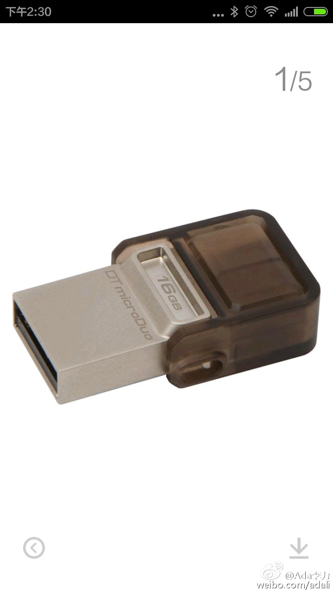

给#姣姣#买了个电脑手机两用的U盘，恰好她要参加同学的聚会，就多买了两个做生日礼物。姣姣对这个生日礼物很不满意，一个理由是同学没手机，另一个理由就是以后肯定是同学爸妈用。我一一辩驳，她后来也就送了。今天倒腾数据，就用了姣姣的U盘，想起来这件事儿啦。小家伙还挺有先见之明。 
保存下百利达TANITA蓝牙脂肪称BC-504的手机应用软件下载地址，有安卓和苹果版本。日本官方网站（英文）网页链接@Ada李力:设置蓝牙通讯功能遇到些问题，盒子里的说明书上的下载地址有些是无效的，倒是客服后来发过来的软件安装后，能连上机器。 每天称一称，自动记录，传输到手机上。手机显示体重体脂变化曲线，相当方便的。 百利达TANITA蓝牙智能手机数据管理脂肪测量仪白色BC-504N